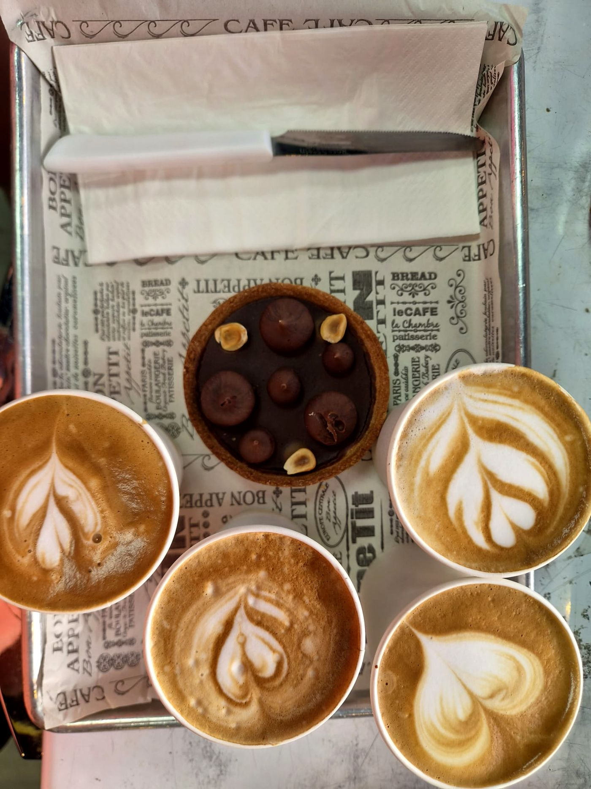
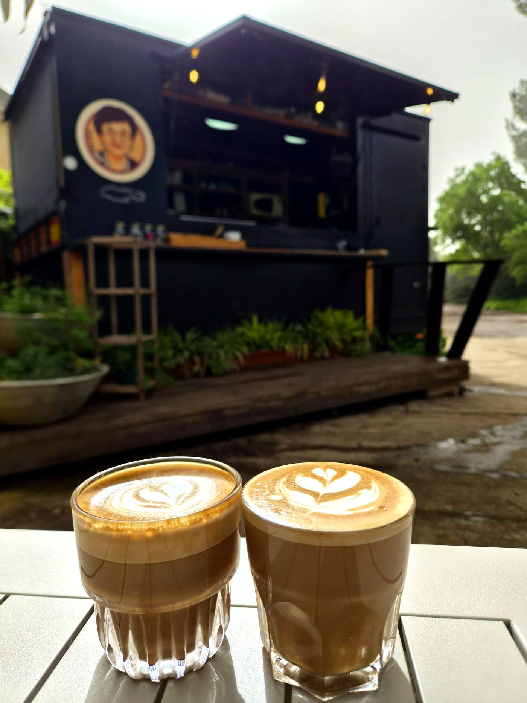
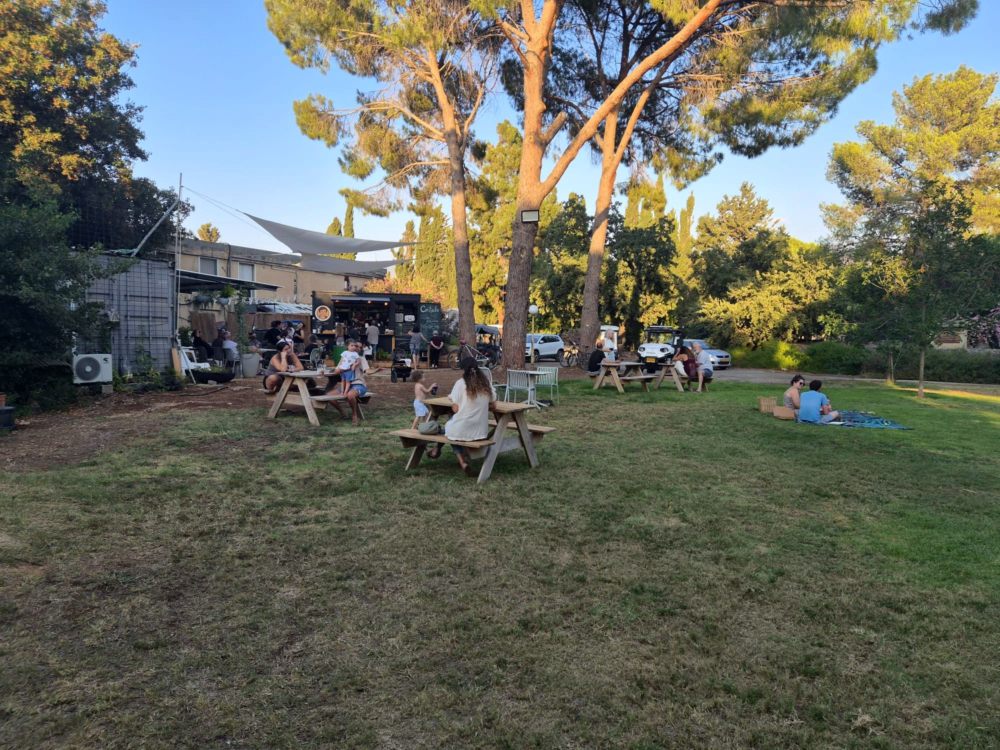
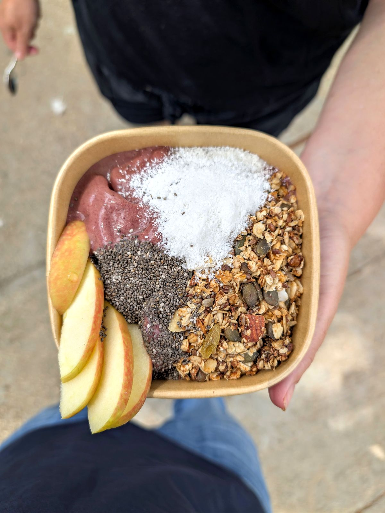
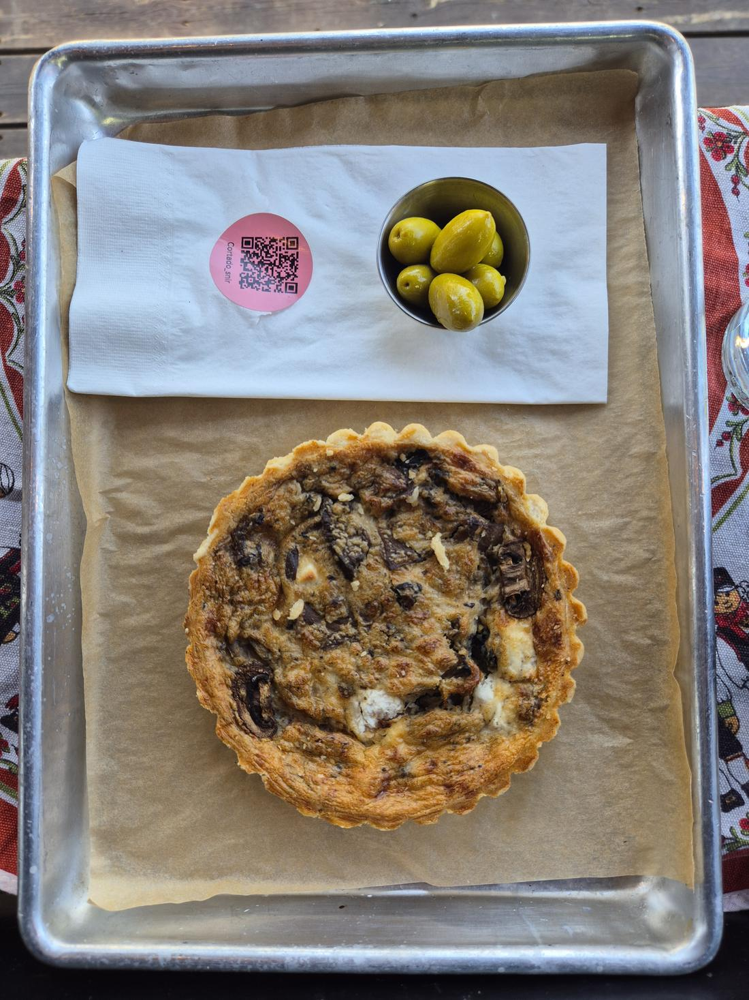
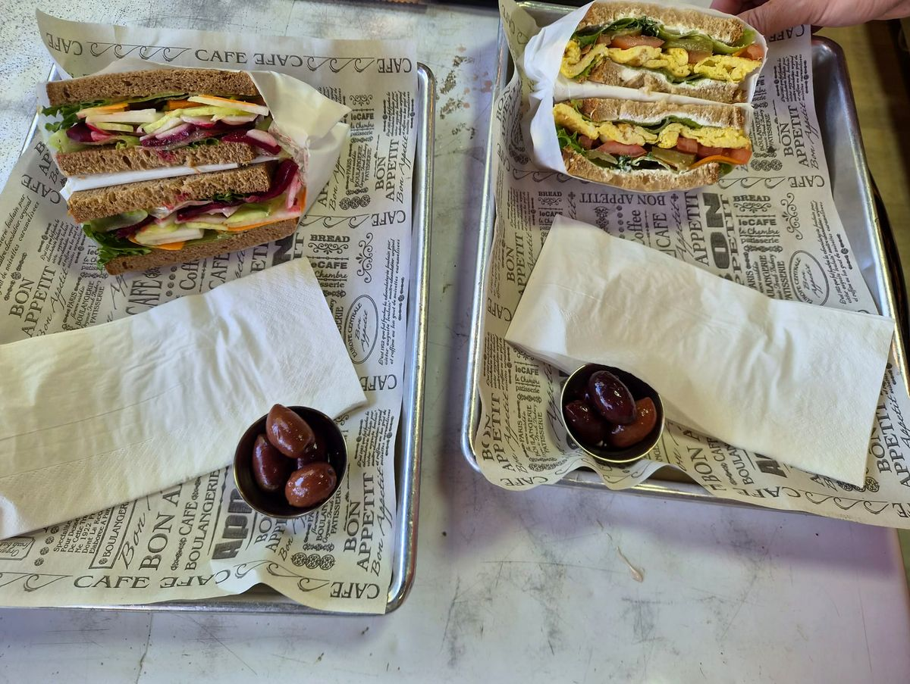
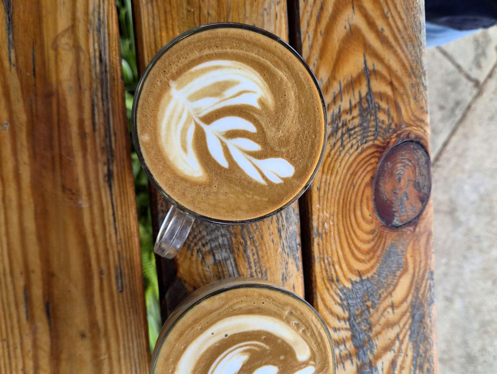
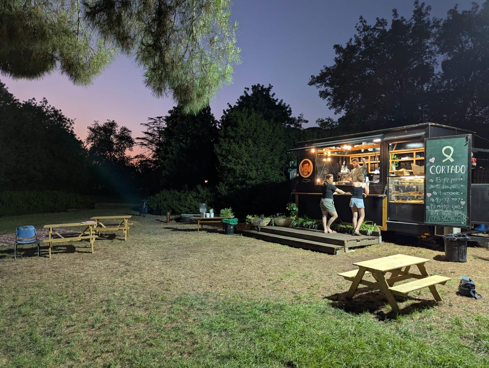

קפה
עם חלב רגיל או צמחי, לבחירתכם.
- קורטדו
- הפוך ואספרסו
- קפה קר ושוקו
עגלת קפה משפחתית · קיבוץ שניר, הגליל העליון
מדשאה בצל עצים ותיקים, גן שעשועים ממול, וקורטדו טוב. דקות מהחצבאני ומהבניאס.


המדשאה, העצים, והזמן לשבת.
Kibbutz Snir · Upper Galileeהמקום
מה יש בעגלה
הוויטרינה משתנה מיום ליום. העגלה חלבית, ויש גם אפשרויות טבעוניות ואפשרויות ללא גלוטן. לעסק אין תעודת כשרות.

עם חלב רגיל או צמחי, לבחירתכם.

לימים החמים על הדשא.

משתנה מיום ליום.


מה יש בוויטרינה היום? שלחו וואטסאפ ונענה.
יש לכם אלרגיה, רגישות או צליאק? שאלו אותנו לפני ההזמנה על הרכיבים ועל חשש למגע צולב.

הסיפור
אחרי שנתיים של פינוי מהצפון, ניצן מלמן, שחר גילעד ועמית מרקס חזרו לשניר עם רצון אחד: להקים משהו קטן ומקומי, שמחבר בין אנשים. העגלה נפתחה ביולי 2025.
ההשראה הגיעה מסבתא, שהביאה איתה מארגנטינה את תרבות בתי הקפה ותמיד הזמינה את כולם לשבת לקפה. המשקה האהוב עליה היה קורטדו.
קורטדו היה המשקה של סבתא. עכשיו הוא גם שלכם. ניצן, שחר ועמית
ביקורות בגוגל
״אם כבר הגעתם לאזור, שווה להיכנס. קפה מעולה, משקאות טעימים, כריכים וכל מה שתחפשו בעגלת קפה.״
״אווירה כייפית רגועה ונעימה והכי חשוב מותאם לילדים… גם השייקים מושקעים וטעימים!״
״מקום קסום על הדשא בקיבוץ שניר. אווירה כייפית, הרבה צל, קפה אחד הטובים והטעימים ומאפים מפנקים.״
ציטוטים מתוך ביקורות ציבוריות בגוגל מפות, בקיצור קל ובלי שינוי תוכן. לא שילמנו ולא נתנו הטבה תמורת ביקורת.
שעות והגעה
דרך המפל, קיבוץ שנירבמרכז הקיבוץ, ליד המרכולית. מול המדשאה הגדולה. חניה בחינם, כולל חניה נגישה.
| ראשון | סגור |
|---|---|
| שני | 17:00–19:00 |
| שלישי | סגור |
| רביעי | 17:00–19:00 |
| חמישי | 17:00–19:00 |
| שישי | 09:00–15:00 |
| שבת | 09:00–19:00 |
השעות לשבוע 18.10 – 24.10. השעות מתעדכנות כאן כל שבוע ומשתנות לפי עונה ובחגים, ולכן הן והתווית "פתוח עכשיו" עשויות לא להיות מעודכנות. לפני נסיעה ארוכה כדאי לבדוק בגוגל מפות, באינסטגרם או בוואטסאפ.

בקצרה
קפה קורטדו הוא עגלת קפה משפחתית על הדשא במרכז קיבוץ שניר שבגליל העליון, כ־8 דקות הליכה מהכניסה למפל הבניאס (שמורת נחל חרמון) והשביל התלוי, וכ־10 דקות נסיעה משמורת נחל שניר (החצבאני). פתוחים גם בשבת. יש קפה עם חלב רגיל או צמחי, שייקים, קערת אסאי, כריכים, קישים, פיצות ומאפים, וגם אפשרויות טבעוניות וללא גלוטן. מדשאה בצל עצים ותיקים, גן שעשועים ממול, חניה בחינם, Wi-Fi חינם, וכלבים מתקבלים בברכה. לעסק אין תעודת כשרות.
כן. השעות משתנות משבוע לשבוע: שעות השבוע בטבלה שלמעלה ובגוגל מפות, ושינויים מתעדכנים בסטורי באינסטגרם.
כ־8 דקות הליכה מהכניסה למפל הבניאס והשביל התלוי, כ־10 דקות נסיעה משמורת נחל שניר (החצבאני), וכ־5 דקות הליכה מהטנק הסורי. ברכב: כ־7 דקות לתל דן, כרבע שעה לקריית שמונה וכ־40 דקות לחרמון. אפשר לעצור אצלנו לקפה לפני המסלול או אחריו.
לעסק אין תעודת כשרות. העגלה חלבית.
כן. יש שייקים טבעוניים, חלב צמחי לכל משקה ומאפים ללא גלוטן. אם יש לכם אלרגיה או צליאק, שאלו אותנו לפני ההזמנה.
בטח. כלבים מתקבלים בברכה, ויש להם מים.
נכנסים בשער הצהוב וממשיכים ישר, פונים ימינה במרכולית, והעגלה משמאל, על הדשא. יש מקום גם למיניבוסים.
כן, בתיאום מראש. שלחו וואטסאפ או התקשרו 054-312-5466.
במזומן, באשראי או בביט.
אין ישיבה מקורה, ובגשם אנחנו בדרך כלל לא פותחים. בחורף שווה להתעדכן לפני שיוצאים, בסטורי באינסטגרם או בוואטסאפ.
כן, יש שירותים ללקוחות בקרבת העגלה.
יש חניה נגישה, כניסה נגישה ומקומות ישיבה נגישים לכיסאות גלגלים. יש גם Wi-Fi חינם. פרטים נוספים בהצהרת הנגישות.
ביקורת בגוגל לוקחת חצי דקה, ועוזרת לעסק קטן בקיבוץ יותר ממה שנדמה.
In English
Cortado (קפה קורטדו) is a family-run coffee cart on the lawn at the centre of Kibbutz Snir, in Israel's Upper Galilee. It is about an 8-minute walk from the entrance to the Banias waterfall and suspended trail (Hermon Stream Nature Reserve), and about a 10-minute drive on Road 99 from the Snir Stream (Hasbani) Nature Reserve. By car it is about 7 minutes to Tel Dan, 15 minutes to Kiryat Shmona and 40 minutes to Mount Hermon. Inside the kibbutz, drive straight on through the yellow gate and turn right at the grocery shop; the cart is on your left, on the lawn.
Open on Saturdays too. Hours change from week to week, so check Google Maps before you set out.
Coffee with regular or plant-based milk, fruit shakes, açaí bowls, sandwiches, quiches, pizzas and pastries, with vegan and gluten-free options. A dairy kitchen; no kosher certificate.
A shaded lawn with a playground opposite, free parking including accessible parking, wheelchair-accessible seating and free Wi-Fi. Dogs are welcome. Groups by prior arrangement, and there is room for minibuses. Pay by cash, card or Bit. Restrooms nearby. There is no covered seating, so in rain and in winter check Instagram or WhatsApp before you set out.
Opened in July 2025 by Amit Marx, Nitzan Melman and Shahar Gilad, after two years of evacuation from the north. The inspiration was a grandmother who brought café culture with her from Argentina. Cortado was her drink.
עודכן לאחרונה: אוקטובר 2026.
שם העסק: קפה קורטדו (Cortado), עגלת קפה.
כתובת: דרך המפל, קיבוץ שניר 1225000.
טלפון ווואטסאפ: 054-312-5466 · דוא"ל: cortado.snir@gmail.com
כשרות: לעסק אין תעודת כשרות. העגלה חלבית.
אנחנו רוצים שכל אחד ואחת יוכלו להשתמש באתר ולבקר בעגלה. פעלנו להתאים את האתר לתקן הישראלי 5568 ולהנחיות WCAG 2.0 ברמה AA, בהתאם לתקנות שוויון זכויות לאנשים עם מוגבלות (התאמות נגישות לשירות), התשע"ג-2013.
בדיקה אוטומטית בכלי axe-core ובדיקה ידנית בדפדפן כרום, במחשב וברוחב של טלפון. ייתכן שנשארו רכיבים שאינם נגישים במלואם. אם נתקלתם בבעיה, נשמח לדעת ולתקן.
יש חניה נגישה, כניסה נגישה ומקומות ישיבה נגישים לכיסאות גלגלים. כלבי שירות וכלבים בכלל מתקבלים בברכה.
רכז/ת הנגישות של העסק: בטלפון או בוואטסאפ 054-312-5466, או בדוא"ל cortado.snir@gmail.com. נשתדל לענות בתוך כמה ימי עבודה.
תאריך עדכון ההצהרה: ספטמבר 2026.
המדיניות מסבירה איזה מידע נאסף כשאתם גולשים באתר או פונים אלינו, בהתאם לחוק הגנת הפרטיות, התשמ"א-1981.
באתר אין טפסים, אין הרשמה ואין אזור אישי. אנחנו לא מבקשים מכם מידע אישי דרך האתר.
אם תפנו אלינו בוואטסאפ, בטלפון או בדוא"ל, נקבל את מה שתבחרו לשלוח, למשל שם, מספר טלפון ותוכן ההודעה. נשתמש בזה רק כדי לענות לכם, לא נמכור ולא נעביר לאחרים, ולא נשלח לכם פרסומות בלי הסכמה מפורשת.
האתר עצמו לא שומר עוגיות בדפדפן שלכם ולא משתמש באחסון מקומי לצורך מעקב. לכן אין באתר חלון לאישור עוגיות. אם נוסיף בעתיד עוגיות שאינן הכרחיות, נבקש קודם את הסכמתכם ונעדכן כאן.
באתר אין Google Analytics, אין פיקסל של פייסבוק או של מטא, ואין כלי פרסום או מעקב אחרים.
אתם יכולים לבקש לעיין במידע ששמור אצלנו עליכם, לתקן אותו או למחוק אותו. פנו אלינו בדוא"ל cortado.snir@gmail.com.
השימוש באתר כפוף לתנאים האלה. האתר נועד למסור מידע על העגלה.
אנחנו משתדלים שהמידע יהיה נכון, אבל השעות, התפריט והמוצרים בוויטרינה משתנים, ולפעמים האתר לא יתעדכן מיד. זמני ההגעה הם הערכה בלבד. המידע המחייב הוא מה שיש בעגלה בפועל.
אי אפשר להזמין או לשלם דרך האתר. הקנייה נעשית רק בעגלה. אם משהו לא בסדר עם ההזמנה, פנו אלינו מיד במקום ונשמח לתקן. אין בתנאים האלה כדי לגרוע מהזכויות שלכם לפי חוק הגנת הצרכן.
התיאורים "טבעוני" ו"ללא גלוטן" מתייחסים לרכיבים. אם יש לכם אלרגיה, רגישות או צליאק, שאלו אותנו לפני ההזמנה.
הביקורות באתר הן ציטוטים מביקורות ציבוריות בגוגל מפות, בקיצור קל ובלי שינוי התוכן. הדירוג ומספר הביקורות נכונים לתאריך המצוין לידם.
הטקסטים, התמונות והלוגו באתר שייכים לקפה קורטדו או מופיעים ברשות בעליהם. אין להעתיק או להשתמש בהם בלי אישור בכתב.
האתר מקשר לשירותים חיצוניים, כמו וויז, גוגל מפות, וואטסאפ ואינסטגרם. אנחנו לא אחראים לתוכן שלהם או לזמינות שלהם.
על התנאים חלים דיני מדינת ישראל.